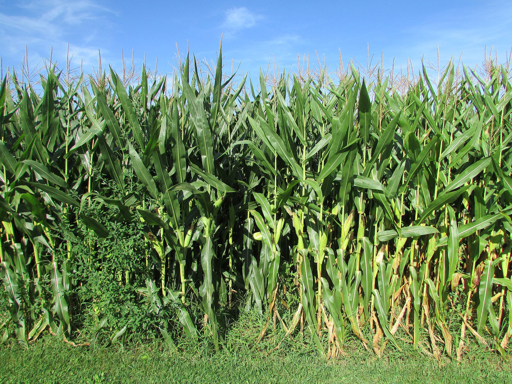

Corn Land
A family corn farm on County Road 9. Sweet corn picked at dawn all summer, and an eight-acre maze to get lost in until November.
Today at the farm

A family corn farm on County Road 9. Sweet corn picked at dawn all summer, and an eight-acre maze to get lost in until November.
